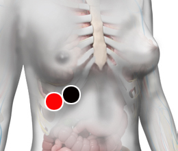

Anorexia
Pares
perihepático - perihepático
corazón - estómago

Generalidades:
Es la falta de apetito que conduce a que la persona baje de peso y ponga en riesgo su salud y su vida.
Es un trastorno de la conducta alimentaria que supone una pérdida de peso provocada por el propio enfermo y lleva a un estado de inanición . La anorexia se caracteriza por el temor a aumentar de peso, y por una percepción distorsionada y delirante del propio cuerpo que hace que el enfermo se vea gordo aun cuando su peso se encuentra por debajo de lo recomendado. Por ello inicia una disminución progresiva del peso mediante ayunos y la reducción de la ingesta de alimentos. Es más frecuente en adolescentes del sexo femenino.
La anorexia también puede estar acompañada de la Bulimia . En este caso el paciente se induce el vómito después de comer para evitar aumentar de peso.
Se sabe poco de sus causas, aunque se estima que pueden haber varios factores psicológicos involucrados como:
Dentro del biomagnetismo se han encontrado algunos pares que pueden incidir en la aparición de este trastorno.
Pares relacionados: